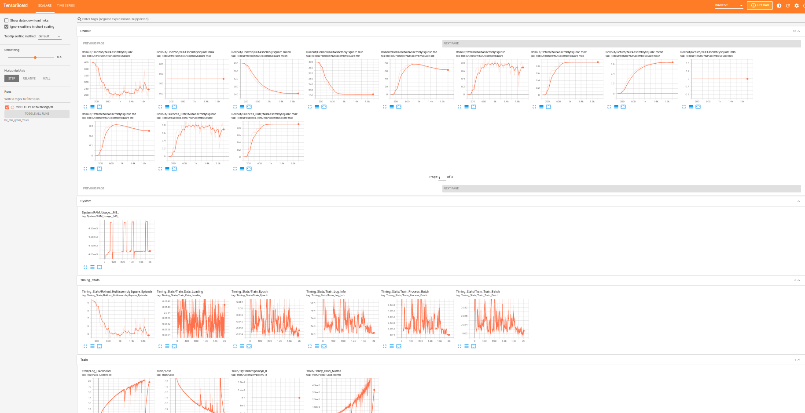

Logging and Viewing Training Results
Contents
Logging and Viewing Training Results#
In this section, we describe how to configure the logging and evaluations that occur during your training run, and how to view the results of a training run.
Configuring Logging#
Saving Experiment Logs#
Configured under experiment.logging:
"logging": {
# save terminal outputs under `logs/log.txt` in experiment folder
"terminal_output_to_txt": true,
# save tensorboard logs under `logs/tb` in experiment folder
"log_tb": true
# save wandb logs under `logs/wandb` in experiment folder
"log_wandb": true
},
Saving Model Checkpoints#
Configured under experiment.save:
"save": {
# enable saving model checkpoints
"enabled": true,
# controlling frequency of checkpoints
"every_n_seconds": null,
"every_n_epochs": 50,
"epochs": [],
# saving the best checkpoints
"on_best_validation": false,
"on_best_rollout_return": false,
"on_best_rollout_success_rate": true
},
Evaluating Rollouts and Saving Videos#
Evaluating Rollouts#
Configured under experiment.rollout:
"rollout": {
"enabled": true, # enable evaluation rollouts
"n": 50, # number of rollouts per evaluation
"horizon": 400, # number of timesteps per rollout
"rate": 50, # frequency of evaluation (in epochs)
"terminate_on_success": true # terminating rollouts upon task success
}
Saving Videos#
To save videos of the rollouts, set experiment.render_video to true.
Viewing Training Results#
Contents of Training Outputs#
After the script finishes, you can check the training outputs in the <train.output_dir>/<experiment.name>/<date> experiment directory:
config.json # config used for this experiment
logs/ # experiment log files
log.txt # terminal output
tb/ # tensorboard logs
wandb/ # wandb logs
videos/ # videos of robot rollouts during training
models/ # saved model checkpoints
Loading Trained Checkpoints
Please see the Using Pretrained Models tutorial to see how to load the trained model checkpoints in the models directory.
Viewing Tensorboard Results#
The experiment results can be viewed using tensorboard:
$ tensorboard --logdir <experiment-log-dir> --bind_all
Below is a snapshot of the tensorboard dashboard:

Experiment results (y-axis) are logged across epochs (x-axis). You may find the following logging metrics useful:
Rollout/: evaluation rollout metrics, eg. success rate, rewards, etc.Rollout/Success_Rate/{envname}-max: maximum success rate over time (this is the metric the study paper uses to evaluate baselines)
Timing_Stats/: time spent by the algorithm loading data, training, performing rollouts, etc.Timing_Stats/: time spent by the algorithm loading data, training, performing rollouts, etc.Train/: training statsValidation/: validation statsSystem/RAM Usage (MB): system RAM used by algorithm
Viewing wandb Results#
You can also view results in wandb, similarly to tensorboard. To do so, ensure that you have set experiment.logging.log_wandb to True in the experiment config.
When first logging to wandb, you will need to specify a wandb entity name, ie. the wandb account under which results will be logged. You can do so by setting WANDB_ENTITY to the desired wandb account name in robomimic/macros_private.py. Note: if this file does not exist, run python robomimic/scripts/setup_macros.py to setup the private macros file.
By default all results will be logged under a wandb project labled default, however you can set the project name by setting experiment.logging.wandb_proj_name in the configs.